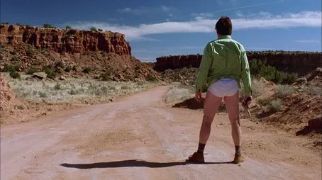
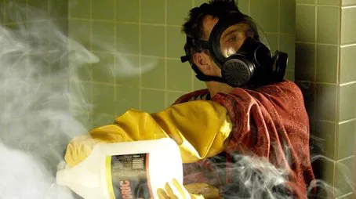
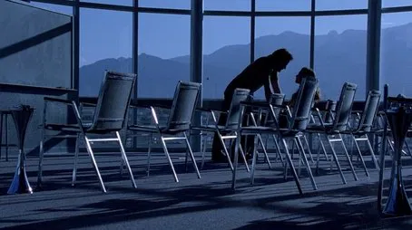
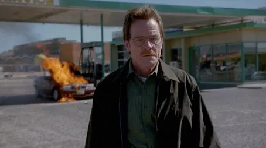
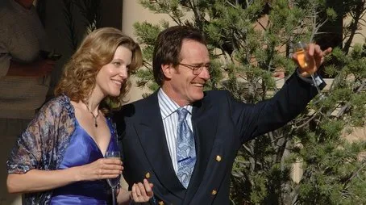
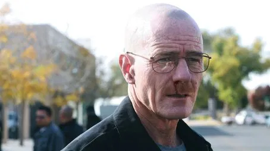
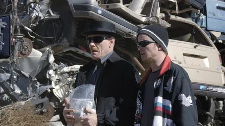

| Número |
Títol |
Descripció |
Imatge |
| 1 |
Pilot |
Walter White, un professor de química de secundària a Albuquerque, Nou Mèxic, rep la notícia devastadora que té càncer de pulmó en fase terminal. Amb la seva dona embarassada, Skyler, i el seu fill discapacitat, Walter Jr., a casa, Walter es troba en una situació desesperada. Després d'una trobada casual amb un antic alumne convertit en fabricant de drogues, Jesse Pinkman, Walter decideix utilitzar els seus coneixements de química per fabricar i vendre metanfetamina amb l'objectiu de garantir el futur financer de la seva família abans que sigui massa tard. |
 |
| 2 |
Cat's in the Bag... |
Després d'un incident violent amb dos traficants de drogues, Walter i Jesse es veuen obligats a desfer-se dels cossos i gestionar les conseqüències del seu primer dia com a fabricants de metanfetamina. Mentrestant, Skyler comença a sospitar que alguna cosa no va bé amb el comportament de Walter. |
 |
| 3 |
...And the Bag's in the River |
Walter lluita amb la moralitat del que ha fet mentre intenta mantenir la seva vida normal. La tensió augmenta quan un dels traficants sobreviu i busca venjança. A més, Skyler descobreix més detalls sobre el comportament estrany de Walter. |
 |
| 4 |
Cancer Man |
Es revela més informació sobre el passat de Skyler i com Walter comença a comprendre l'abast del negoci en què s'ha involucrat. També es mostren les conseqüències emocionals per a la família. |
 |
| 5 |
Gray Matter |
Walter reflexiona sobre les oportunitats perdudes del seu passat i la seva relació amb amics i col·legues. El seu orgull i les seves decisions personals comencen a influir en la seva nova trajectòria. |
 |
| 6 |
Crazy Handful of Nothin' |
Walter adopta la identitat de Heisenberg per primera vegada, mostrant un costat més fosc i calculador mentre enfronta un nou rival en el negoci de la droga. |
 |
| 7 |
A No-Rough-Stuff-Type Deal |
La tensió arriba mentre Walter i Jesse intenten completar una feina arriscada per consolidar-se en el mercat. Les conseqüències personals i legals dels seus actes comencen a aparèixer. |
 |